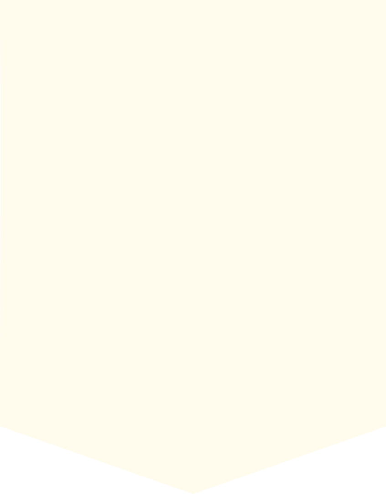

How can you spot the difference? Fake news can be tough to spot, but identifying it is definitely possible! Here are three simple steps
to help you out when making sure that your facts are actually facts!
Step 1: Grammar Check
Grammar is a very important factor when it comes to news. Proper sources
make sure that their grammar is correct since this is essential for viewers to understand the
information properly. There are times when sources of fake news are able to do this as well, though. However,
most of the time, you can spot some easy-to-find grammar mistakes in their articles and images. You
can’t identify all fake news with this step, but it surely acts as a good filter. To end, if it's
been written so weirdly it's confusing, it probably isn’t true.
Step 2: Editing Check
Most valid news sources have a good editing and graphics team working in the background, making
sure that the information is presentable and appealing to the public. If something looks like it was
faked, it was probably faked. This manifests in a variety of ways such as blurry images alongside
clear images, words with fonts that don’t actually match the rest, very bad green screen editing and
places that appear to have been covered with a color that someone attempted to match with the background
but didn't really match. Also, familiarize yourself with websites that are valid sources of information. There are
some people out there who copy the URLs and change them a bit so a not-so-careful checker can be easily
fooled. Just remember, if it looks sketchy, it probably is sketchy.
Step 3: Google Check
The last step is something applicable to information of any form one sees on the Internet: fact-checking.
You don't necessarily have to use Google since any search engine works. If your information passed the Grammar
Check and the Editing Check, you only need to do one last test before you either dismiss it as fake news or
accept it as correct: you have to search for more sources that state the same information. If the same news is
reported by commonly known news sources, your information is most likely true since news sources like that have
a huge reputation and have no incentive to start releasing fake news. If you aren’t sure whether
you can trust information from certain sites or not, you should do a background check on the author of the
information. Ask yourself, "Is this person qualified to speak about things in the field said information belongs to?" If they
are, your information is most likely true. If they aren’t, you should ignore that information. Lastly, multiple trustworthy
sources should confirm your information. Remember, if it’s true, there usually won’t only be one person confirming it.
